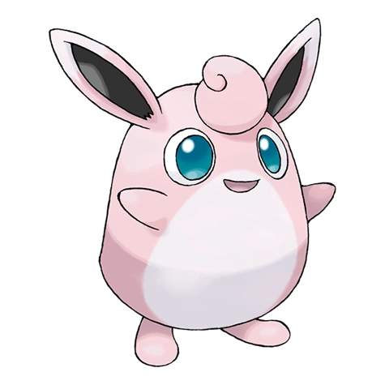
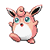

Вигглитуф

Вигглитуф — Покемон 1 поколения под номером 40 в Покедекс. Обитает он в регионе Канто и относится к Нормальному типу. Это финальная стадия эволюции Покемона Джигглипаффа. У Вигглитуфа большие глаза, похожие на блюдца. Поверхность его глаза всегда покрыта тонким слоем слёз. Если пыль попадает в глаза этого Покемона, она быстро смывается.
Тип и слабости:
Нормальный
Эволюция

# 040 Вигглитуф
Финальная стадия